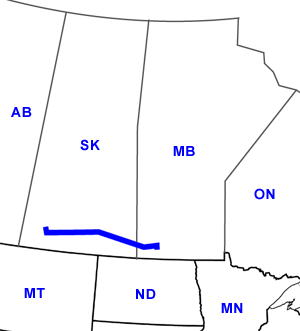

Day Thirty-Eight
Stewart Valley, SK - Carberry, MB
Date: 7/18/2002
Distance: 478 miles
Weather: high 80's
It was a windy night at the Provincial Park, but our tent held up just fine. After two days of campgrounds without shower facilities, it was great to have hot showers in the morning. We stopped at the grocery store before setting out on the highway again.
Our first stop eastward today was Moose Jaw. (This is the real name of the town.) We stopped to take a tour through the town's underground tunnels. We choose to tour the story of the Chinese immigrants into Canada. A tour guide took us through a series of underground tunnels recreated as the Chinese immigrants would have seen them when they lived and worked below the city. The tour was interesting, although cheesy, and we had to stifle a laugh when the tour guide suddenly broke into character and started yelling.
Our next stop in the city of Regina was a short one.We had a quick oil change in town, and were thoroughly entertained by the three stooges working there. Desperate for customers, these three all chatted at once, and couldn't contain their enthusiasm to change our oil. We asked if there was anything we should see in Regina, and it was the first silence we had while we were there.
The land outside of cities is flat and after several hours of it, it is boring. So we continued to zoom east on highway 1. Highway 1 is known as the Trans Canada Highway. With such a name, and such a long road, you would think it was a big road, when in fact it's one lane in each direction in many places. Our hypothesis is that truckers don't actually use this road for a primary route for hauling goods. Perhaps goods are simply brought north/south from the US.
After listening to three hours straight of This American Life on the road, we had crossed into Manitoba and arrived at the Spruce Woods Provincial Park, home of the only desert in Manitoba. When told this by the woman at the Manitoba welcome center, we were worried. But the park was actually quite large and had many trees and lakes. It even had a store, mini-golf, and of course mosquitoes. Once in the tent, if you were quiet, you could hear the swarms of mosquitoes outside the tent buzzing like high pitch bees, just waiting for you to open the door.